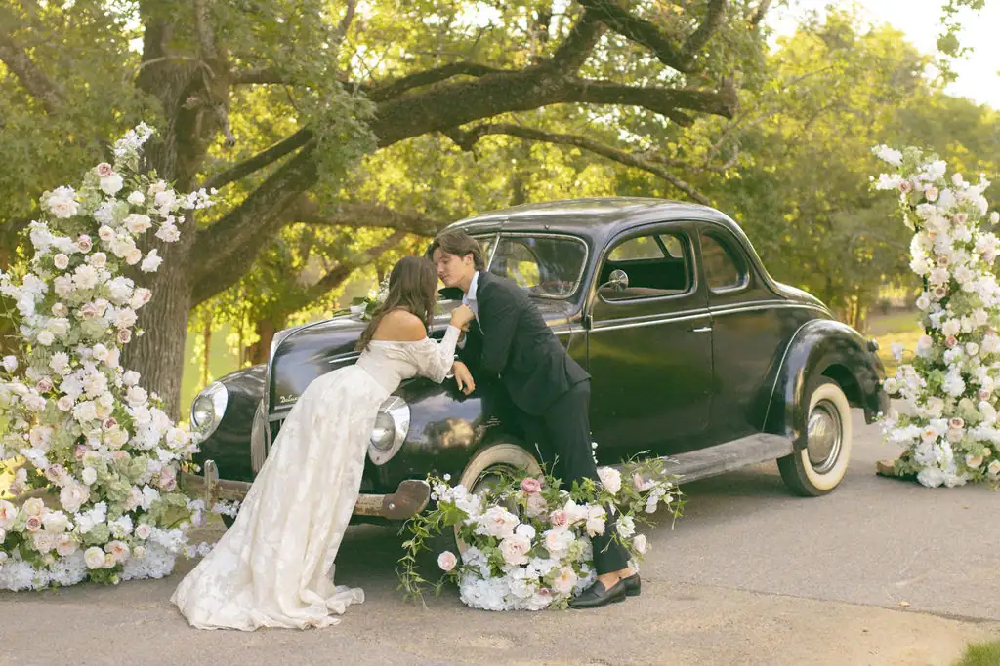
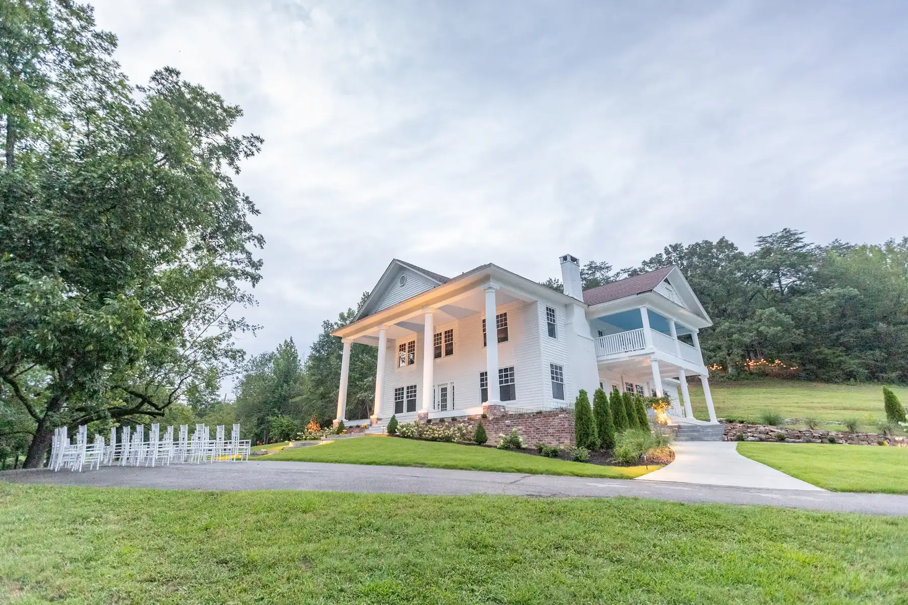

Vows beneath an open sky
One estate. One couple. One weekend. One wedding at a time.
Seventy-four acres cannot be split, so they are not. No second bride, no other family's flowers going out the far door, no cocktail hour audible from your ceremony. The meadow sits low between ridgelines, which is why sound stays in it and the hills hold the last of the light a good half-hour after it has left the grass.



